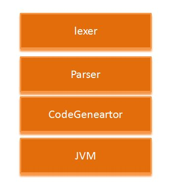

Aviator 表达式求值引擎开源框架
简介¶
Aviator是一个高性能、轻量级的java语言实现的表达式求值引擎，主要用于各种表达式的动态求值。现在已经有很多开源可用的java表达式求值引擎，为什么还需要Avaitor呢？
Aviator的设计目标是轻量级和高性能 ，相比于Groovy、JRuby的笨重，Aviator非常小，加上依赖包也才450K,不算依赖包的话只有70K；当然，Aviator的语法是受限的，它不是一门完整的语言，而只是语言的一小部分集合。
其次，Aviator的实现思路与其他轻量级的求值器很不相同，其他求值器一般都是通过解释的方式运行，而Aviator则是直接将表达式编译成Java字节码，交给JVM去执行。简单来说，Aviator的定位是介于Groovy这样的重量级脚本语言和IKExpression这样的轻量级表达式引擎之间。
特性¶
Aviator的特性
- 支持大部分运算操作符，包括算术操作符、关系运算符、逻辑操作符、正则匹配操作符(=~)、三元表达式?: ，并且支持操作符的优先级和括号强制优先级，具体请看后面的操作符列表。
- 支持函数调用和自定义函数
- 支持正则表达式匹配，类似Ruby、Perl的匹配语法，并且支持类Ruby的$digit指向匹配分组。
- 自动类型转换，当执行操作的时候，会自动判断操作数类型并做相应转换，无法转换即抛异常。
- 支持传入变量，支持类似a.b.c的嵌套变量访问。
- 性能优秀
Aviator的限制：
- 没有if else、do while等语句，没有赋值语句，仅支持逻辑表达式、算术表达式、三元表达式和正则匹配。
- 没有位运算符
整体结构¶
Aviator的结构非常简单，一个典型的求值器的结构

依赖包¶
commons-beanutils和commons-logging
使用手册¶
执行表达式¶
Aviator的使用都是集中通过com.googlecode.aviator.AviatorEvaluator这个入口类来处理，最简单的例子，执行一个计算1+2+3的表达式：
import com.googlecode.aviator.AviatorEvaluator;
public class SimpleExample {
public static void main(String[] args) {
Long result = (Long) AviatorEvaluator.execute("1+2+3");
System.out.println(result);
}
}
细心的朋友肯定注意到结果是Long，而不是Integer。这是因为Aviator的数值类型仅支持Long和Double，任何整数都将转换成Long，任何浮点数都将转换为Double，包括用户传入的变量数值。这个例子的打印结果将是正确答案6。
使用变量¶
想让Aviator对你say hello吗？很简单，传入你的名字，让Aviator负责字符串的相加：
import com.googlecode.aviator.AviatorEvaluator;
public class SayHello {
public static void main(String[] args) {
if (args.length < 1) {
System.err.print("Usesage: Java SayHello yourname");
}
String yourname = args[0];
Map<String, Object> env = new HashMap<String, Object>();
env.put("yourname", yourname);
String result = (String) AviatorEvaluator.execute(" 'hello ' + yourname ", env);
System.out.println(result);
}
}
上面的例子演示了怎么向表达式传入变量值，表达式中的yourname是一个变量，默认为null，通过传入Map<String,Object>的变量绑定环境，将yourname设置为你输入的名称。env的key是变量名，value是变量的值。
上面例子中的'hello '是一个Aviator的String，Aviator的String是任何用单引号或者双引号括起来的字符序列，String可以比较大小（基于unicode顺序），可以参与正则匹配，可以与任何对象相加，任何对象与String相加结果为String。String中也可以有转义字符，如/n、//、/'等。
AviatorEvaluator.execute(" 'a/"b' "); //字符串 a'b
AviatorEvaluator.execute(" /"a/'b/" "); //字符串 a"b
AviatorEvaluator.execute(" 'hello'+3 "); //字符串 hello 3
AviatorEvaluator.execute(" 'hello '+ unknow "); //字符串 hello null
调用函数¶
Aviator支持函数调用，函数调用的风格类似lua，下面的例子获取字符串的长度：
AviatorEvaluator.execute("string.length('hello')");
string.length('hello')是一个函数调用，string.length是一个函数,'hello'是调用的参数。
再用string.substring来截取字符串：
AviatorEvaluator.execute("string.contains(/"test/",string.substring('hello',1,2))");
通过string.substring('hello',1,2)获取字符串'e'，然后通过函数string.contains判断e是否在'test'中。可以看到，函数可以嵌套调用。
Aviator的内置函数列表请看后面。
自定义函数¶
Aviator除了内置的函数之外，还允许用户自定义函数，只要实现com.googlecode.aviator.runtime.type.AviatorFunction接口，并注册到AviatorEvaluator即可使用
public interface AviatorFunction {
/**
* Get the function name
*
* @return
*/
public String getName();
/**
* call function
*
* @param env
* Variable environment
* @param args
* Function arguments
* @return
*/
public AviatorObject call(Map<String, Object> env, AviatorObject... args);
}
可以看一个例子，我们实现一个add函数来做数值的相加：
import com.googlecode.aviator.runtime.function.FunctionUtils;
import com.googlecode.aviator.runtime.type.AviatorDouble;
import com.googlecode.aviator.runtime.type.AviatorFunction;
import com.googlecode.aviator.runtime.type.AviatorObject;
public class AddFunction implements AviatorFunction {
public AviatorObject call(Map<String, Object> env, AviatorObject... args) {
if (args.length != 2) {
throw new IllegalArgumentException("Add only supports two arguments");
}
Number left = FunctionUtils.getNumberValue(0, args, env);
Number right = FunctionUtils.getNumberValue(1, args, env);
return new AviatorDouble(left.doubleValue() + right.doubleValue());
}
public String getName() {
return "add";
}
}
注册到AviatorEvaluator并调用如下：
//注册函数
AviatorEvaluator.addFunction(new AddFunction());
System.out.println(AviatorEvaluator.execute("add(1,2)"));
System.out.println(AviatorEvaluator.execute("add(add(1,2),100)"));
注册函数通过AviatorEvaluator.addFunction方法，移除可以通过removeFunction。
编译表达式¶
上面提到的例子都是直接执行表达式，事实上Aviator背后都帮你做了编译并执行的工作。你可以自己先编译表达式，返回一个编译的结果，然后传入不同的env来复用编译结果，提高性能，这是更推荐的使用方式：
import java.util.HashMap;
import java.util.Map;
import com.googlecode.aviator.AviatorEvaluator;
import com.googlecode.aviator.Expression;
public class CompileExample {
public static void main(String[] args) {
String expression = "a-(b-c)>100";
// 编译表达式
Expression compiledExp = AviatorEvaluator.compile(expression);
Map<String, Object> env = new HashMap<String, Object>();
env.put("a", 100.3);
env.put("b", 45);
env.put("c", -199.100);
// 执行表达式
Boolean result = (Boolean) compiledExp.execute(env);
System.out.println(result);
}
}
通过compile方法可以将表达式编译成Expression的中间对象，当要执行表达式的时候传入env并调用Expression的execute方法即可。表达式中使用了括号来强制优先级，这个例子还使用了>用于比较数值大小，比较运算符!=、==、>、>=、<、<=不仅可以用于数值，也可以用于String、Pattern、Boolean等等，甚至是任何用户传入的两个都实现了java.lang。Comparable接口的对象之间。
编译后的结果你可以自己缓存，也可以交给Aviator帮你缓存，AviatorEvaluator内部有一个全局的缓存池，如果你决定缓存编译结果，可以通过：
public static Expression compile(String expression, boolean cached)
将cached设置为true即可，那么下次编译同一个表达式的时候将直接返回上一次编译的结果。使缓存失效通过：
public static void invalidateCache(String expression)
方法。
访问数组和集合¶
可以通过中括号去访问数组和java.util.List对象，可以通过map.key访问java.util.Map中key对应的value，一个例子：
import java.util.ArrayList;
import java.util.Date;
import java.util.HashMap;
import java.util.List;
import java.util.Map;
import com.googlecode.aviator.AviatorEvaluator;
public class CollectionExample {
public static void main(String[] args) {
final List<String> list = new ArrayList<String>();
list.add("hello");
list.add(" world");
final int[] array = new int[3];
array[0] = 0;
array[1] = 1;
array[2] = 3;
final Map<String, Date> map = new HashMap<String, Date>();
map.put("date", new Date());
Map<String, Object> env = new HashMap<String, Object>();
env.put("list", list);
env.put("array", array);
env.put("mmap", map);
System.out.println(AviatorEvaluator.execute(
"list[0]+list[1]+'/narray[0]+array[1]+array[2]='+(array[0]+array[1]+array[2]) +' /ntoday is '+mmap.date ", env));
}
}
三元操作符¶
Aviator不提供if else语句，但是提供了三元操作符?:用于条件判断，使用上与java没有什么不同：
import java.util.HashMap;
import java.util.Map;
import com.googlecode.aviator.AviatorEvaluator;
public class TernaryOperatorExample {
public static void main(String[] args) {
if (args.length < 1) {
System.err.println("Usage: java TernaryOperatorExample [number]");
System.exit(1);
}
int num = Integer.parseInt(args[0]);
Map<String, Object> env = new HashMap<String, Object>();
env.put("a", num);
String result = (String) AviatorEvaluator.execute("a>0? 'yes':'no'", env);
System.out.println(result);
}
}
这个例子用来判断用户传入的数字是否是正整数，是的话打印yes。
Aviator的三元表达式对于两个分支的结果类型并不要求一致，可以是任何类型，这一点与java不同。
正则表达式匹配¶
Aviator支持类Ruby和Perl风格的表达式匹配运算，通过=~操作符，如下面这个例子匹配email并提取用户名返回：
import java.util.HashMap;
import java.util.Map;
import com.googlecode.aviator.AviatorEvaluator;
public class RegularExpressionExample {
public static void main(String[] args) {
String email = "killme2008@gmail.com";
Map<String, Object> env = new HashMap<String, Object>();
env.put("email", email);
String username = (String) AviatorEvaluator.execute("email=~/([//w0-8]+@//w+[//.//w+]+)/ ? $1:'unknow'", env);
System.out.println(username);
}
}
email与正则表达式//(//w0-8+@//w+//.//w++)/通过=~操作符来匹配，结果为一个Boolean类型，因此可以用于三元表达式判断，匹配成功的时候返回$1，指代正则表达式的分组1，也就是用户名，否则返回unknown。这个例子将打印killme2008这个用户名。
Aviator在表达式级别支持正则表达式，通过//括起来的字符序列构成一个正则表达式，正则表达式可以用于匹配（作为=~的右操作数)、比较大小，匹配仅能与字符串进行匹配。匹配成功后，Aviator会自动将匹配成功的分组放入$num的变量中，其中$0指代整个匹配的字符串，而$1表示第一个分组，以此类推。
Aviator的正则表达式规则跟Java完全一样，因为内部其实就是使用java.util.regex.Pattern做编译的。
变量的语法糖衣¶
Aviator有个方便用户使用变量的语法糖衣，当你要访问变量a中的某个属性b，那么你可以通过a.b访问到，更进一步，a.b.c将访问变量a的b属性中的c属性值，推广开来也就是说Aviator可以将变量声明为嵌套访问的形式，一个例子，Foo类有属性i、f、date：
public class Foo {
int i;
float f;
Date date = new Date();
public Foo(int i, float f, Date date) {
super();
this.i = i;
this.f = f;
this.date = date;
}
public int getI() {
return i;
}
public void setI(int i) {
this.i = i;
}
public float getF() {
return f;
}
public void setF(float f) {
this.f = f;
}
public Date getDate() {
return date;
}
public void setDate(Date date) {
this.date = date;
}
}
Foo类符合JavaBean规范，并且是public的，我们执行一个表达式来描述Foo:
import java.util.Date;
import java.util.HashMap;
import java.util.Map;
import com.googlecode.aviator.AviatorEvaluator;
public class VariableExample {
public static void main(String[] args) {
Foo foo = new Foo(100, 3.14f, new Date());
Map<String, Object> env = new HashMap<String, Object>();
env.put("foo", foo);
String result =
(String) AviatorEvaluator.execute(
" '[foo i='+ foo.i + ' f='+foo.f+' year='+(foo.date.year+1900)+ ' month='+foo.date.month +']' ",
env);
System.out.println(result);
}
}
细看下表达式：
'[foo i='+ foo.i + ' f='+foo.f+' year='+(foo.date.year+1900)+ ' month='+foo.date.month +']'
可以看到我们通过foo.i和foo.f的方式来访问foo变量中的i和f属性，并且通过foo.date.year的方式来访问foo中date对象的year属性（其实是getYear方法）。
nil对象¶
nil是Aviator内置的常量，类似java中的null，表示空的值。nil跟null不同的在于，在java中null只能使用在==、!=的比较运算符，而nil还可以使用>、>=、<、<=等比较运算符。Aviator规定，任何对象都比nil大除了nil本身。用户传入的变量如果为null，将自动以nil替代。
AviatorEvaluator.execute("nil == nil"); //true
AviatorEvaluator.execute(" 3> nil"); //true
AviatorEvaluator.execute(" true!= nil"); //true
AviatorEvaluator.execute(" ' '>nil "); //true
AviatorEvaluator.execute(" a==nil "); //true,a is null
nil与String相加的时候，跟java一样显示为null
日期比较¶
Aviator并不支持日期类型，如果要比较日期，你需要将日期写字符串的形式，并且要求是形如"yyyy-MM-dd HH:mm:ss:SS"的字符串，否则都将报错。 字符串跟java.util.Date比较的时候将自动转换为Date对象进行比较：
import java.text.SimpleDateFormat;
import java.util.Date;
import java.util.HashMap;
import java.util.Map;
import com.googlecode.aviator.AviatorEvaluator;
public class DateExample {
public static void main(String[] args) throws Exception {
Map<String, Object> env = new HashMap<String, Object>();
final Date date = new Date();
String dateStr = new SimpleDateFormat("yyyy-MM-dd HH:mm:ss:SS").format(date);
env.put("date", date);
env.put("dateStr", dateStr);
Boolean result = (Boolean) AviatorEvaluator.execute("date==dateStr", env);
System.out.println(result);
result = (Boolean) AviatorEvaluator.execute("date > '2009-12-20 00:00:00:00' ", env);
System.out.println(result);
result = (Boolean) AviatorEvaluator.execute("date < '2200-12-20 00:00:00:00' ", env);
System.out.println(result);
result = (Boolean) AviatorEvaluator.execute("date ==date ", env);
System.out.println(result);
}
}
也就是说String除了能跟String比较之外，还能跟nil和date字符串比较。
两种模式¶
默认AviatorEvaluator以编译速度优先：
AviatorEvaluator.setOptimize(AviatorEvaluator.COMPILE);
你可以修改为运行速度优先，这会做更多的编译优化：
AviatorEvaluator.setOptimize(AviatorEvaluator.EVAL);
语法手册¶
下面是Aviator详细的语法规则定义。
数据类型¶
- Number类型：数字类型，支持两种类型，分别对应Java的Long和Double，也就是说任何整数都将被转换为Long，而任何浮点数都将被转换为Double，包括用户传入的数值也是如此转换。不支持科学计数法，仅支持十进制。如-1、100、2.3等。
- String类型： 字符串类型，单引号或者双引号括起来的文本串，如'hello world'，变量如果传入的是String或者Character也将转为String类型。
- Bool类型： 常量true和false，表示真值和假值，与java的Boolean.TRUE和Boolean.False对应。
- Pattern类型： 类似Ruby、perl的正则表达式，以//括起来的字符串，如//d+/，内部实现为java.util.Pattern。
- 变量类型： 与Java的变量命名规则相同，变量的值由用户传入，如"a"、"b"等
- nil类型: 常量nil,类似java中的null，但是nil比较特殊，nil不仅可以参与==、!=的比较，也可以参与>、>=、<、<=的比较，Aviator规定任何类型都n大于nil除了nil本身，nil==nil返回true。用户传入的变量值如果为null，那么也将作为nil处理，nil打印为null。
操作符¶
算术运算符¶
Aviator支持常见的算术运算符，包括+ - * / % 五个二元运算符，和一元运算符"-"。其中 - * / %和一元的"-"仅能作用于Number类型。
"+"不仅能用于Number类型，还可以用于String的相加，或者字符串与其他对象的相加。Aviator规定，任何类型与String相加，结果为String。
逻辑运算符¶
Avaitor的支持的逻辑运算符包括，一元否定运算符"!"，以及逻辑与的"&&"，逻辑或的"||"。逻辑运算符的操作数只能为Boolean。
关系运算符¶
Aviator支持的关系运算符包括"<" "<=" ">" ">=" 以及"=="和"!=" 。
&&和||都执行短路规则。
关系运算符可以作用于Number之间、String之间、Pattern之间、Boolean之间、变量之间以及其他类型与nil之间的关系比较，不同类型除了nil之外不能相互比较。
Aviator规定任何对象都比nil大除了nil之外。
匹配运算符¶
匹配运算符"=~"用于String和Pattern的匹配，它的左操作数必须为String，右操作数必须为Pattern。匹配成功后，Pattern的分组将存于变量$num，num为分组索引。
三元运算符¶
Aviator没有提供if else语句，但是提供了三元运算符 "?:"，形式为 bool ? exp1: exp2。 其中bool必须为结果为Boolean类型的表达式，而exp1和exp2可以为任何合法的Aviator表达式，并且不要求exp1和exp2返回的结果类型一致。
操作符列表¶
Aviator支持操作符的优先级，并且允许通过括号来强制优先级，下面是完整的操作符列表，按照优先级从高到低的顺序排列：
| 序号 | 操作符 | 结合性 | 操作数限制 |
| 0 | () [ ] | 从左到右 | ()用于函数调用，[ ]用于数组和java.util.List的元素访问，要求[indx]中的index必须为整型 |
| 1 | ! - | 从右到左 | ! 能用于Boolean,- 仅能用于Number |
| 2 | * / % | 从左到右 | Number之间 |
| 3 | + - | 从左到右 | + - 都能用于Number之间, + 还能用于String之间，或者String和其他对象 |
| 4 | < <= > >= | 从左到右 | Number之间、String之间、Pattern之间、变量之间、其他类型与nil之间 |
| 5 | == != =~ | 从左到右 | ==和!=作用于Number之间、String之间、Pattern之间、变量之间、其他类型与nil之间以及String和java.util.Date之间，=~仅能作用于String和Pattern之间 |
| 6 | && | 从左到右 | Boolean之间，短路 |
| 7 | || | 从左到右 | Boolean之间，短路 |
| 8 | ? : | 从右到左 | 第一个操作数的结果必须为Boolean，第二和第三操作数结果无限制 |
类型转换规则¶
- Java的byte short int long都转化为Long类型，Java的float,double都将转化为Double类型。Java的char String都将转化为String。Java的null都将转为nil。
- 当两个操作符都是Double或者都是Long的时候，各自按照Double或者Long的类型执行
- 当两个操作符中某一个是Double的时候，另一个操作数也将转换成Double，按照Double类型执行。
- 任何类型与String相加，结果为String
- 任何类型都比nil大，除了nil本身。
- nil在打印或者与字符串相加的时候，显示为null
- 形如"yyyy-MM-dd HH:mm:ss:SS"的字符串，在与java.util.Date做比较的时候将尝试转换成java.util.Date对象比较。
- 没有规定的类型转换操作，除了未知的变量类型之间，都将抛出异常。
常量和变量¶
| true | 真值 |
| false | 假值 |
| nil | 空值 |
| $digit | 正则表达式匹配成功后的分组，$0表示匹配的字符串，$1表示第一个分组 etc. |
内置函数¶
| 函数名称 | 说明 |
| sysdate() | 返回当前日期对象java.util.Date |
| rand() | 返回一个介于0-1的随机数，double类型 |
| print([out],obj) | 打印对象，如果指定out，向out打印，否则输出到控制台 |
| println([out],obj) | 与print类似，但是在输出后换行 |
| now() | 返回System.currentTimeMillis |
| string.contains(s1,s2) | 判断s1是否包含s2，返回Boolean |
| string.length(s) | 求字符串长度,返回Long |
| string.startsWith(s1,s2) | s1是否以s2开始，返回Boolean |
| string.endsWith(s1,s2) | s1是否以s2结尾,返回Boolean |
| string.substring(s,begin[,end]) | 截取字符串s，从begin到end，end如果忽略的话，将从begin到结尾，与java.util.String.substring一样。 |
| math.abs(d) | 求d的绝对值 |
| math.sqrt(d) | 求d的平方根 |
| math.pow(d1,d2) | 求d1的d2次方 |
| math.log(d) | 求d的自然对数 |
| math.log10(d) | 求d以10为底的对数 |
| math.sin(d) | 正弦函数 |
| math.cos(d) | 余弦函数 |
| math.tan(d) | 正切函数 |
| map(seq,fun) | 将函数fun作用到集合seq每个元素上，返回新元素组成的集合 |
| filter(seq,predicate) | 将谓词predicate作用在集合的每个元素上，返回谓词为true的元素组成的集合 |
| count(seq) | 返回集合大小 |
| include(seq,element) | 判断element是否在集合seq中，返回boolean值 |
| sort(seq) | 排序集合，仅对数组和List有效，返回排序后的新集合 |
| reduce(seq,fun,init) | fun接收两个参数，第一个是集合元素，第二个是累积的init，本函数用于将fun作用在集合每个元素和初始值上面，返回最终的init值 |
| seq.eq(value) | 返回一个谓词，用来判断传入的参数是否跟value相等,用于filter函数，如filter(seq,seq.eq(3)) 过滤返回等于3的元素组成的集合 |
| seq.neq(value) | 与seq.eq类似，返回判断不等于的谓词 |
| seq.gt(value) | 返回判断大于value的谓词 |
| seq.ge(value) | 返回判断大于等于value的谓词 |
| seq.lt(value) | 返回判断小于value的谓词 |
| seq.le(value) | 返回判断小于等于value的谓词 |
| seq.nil() | 返回判断是否为nil的谓词 |
| seq.exists() | 返回判断不为nil的谓词 |